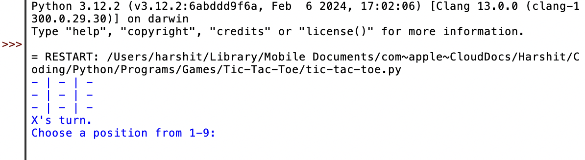

Growing up with the rise of technology and the development of easier languages, I was constantly exposed to the realm of programming by my parents. By joining a coding class I was able to dive deeper into the world of making games using coding languages. I did this through the use of Pygame Zero with Python. With Python being one of the easiest and most capable programming languages, I was able to create different games and work around the fundamentals of programming. This experience allowed me to better comprehend the basics of programming and its components such as variables and loops, but also allowed me to understand how to manipulate the language to my liking. Additionally, I also helped nurture my yearn to problem solve and harness my creative thinking skills. When an error would occur with the program, I was able to go through it step-by-step and identify what may be causing it, alongside fixing the given issue. This was the gateway to my desire to work in the field of technology and it truly allowed me to later explore new languages and different things to do with those languages aside from making games.